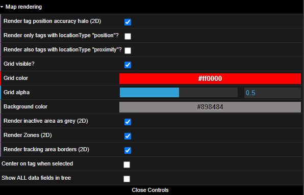
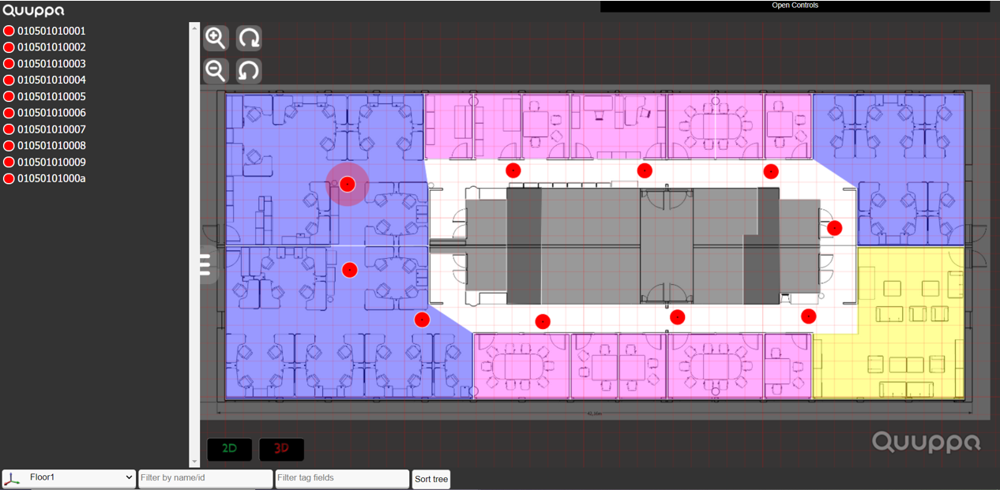
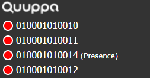
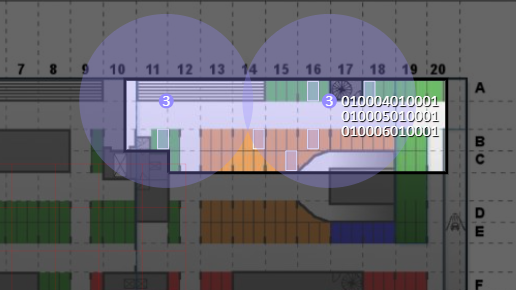

Map View Controls
The Map View Controls allow you to further customise what is shown in the map view and what the map looks like.

These controls can be edited by clicking on the Open Controls banner in the top right corner of the map view page. This will open a controls toolbar that you can use to customise the map view.
This section will walk you through what the different options available in the toolbar do.
Center on tag when selected
When in use, the map will automatically center on the tag that is selected in the tag tree in the panel on the left. This can be helpful especially in bigger deployments with large volumes of tags as it may be difficult to find a specific tag on the map.
By default, this feature is turned off.
Show ALL data fields in tree
When this feature is on, all of the available tag data fields will be shown in the tag tree on the left. For more information about the tag fields and their definitions, please see the Tag Details Table Definitions section of this guide.
By default, this feature is not active and a smaller selection of tag information is shown.
Map rendering
By clicking on Map rendering, the toolbar will expand to show further options for editing the visual elements in the map view. You will find their descriptions below.
Render tag position accuracy halo (2D)
When in use, a halo will be shown around the tag on the map to indicate uncertainty in the accuracy of the positioning estimate. The larger the halo around the tag, the more uncertainty there is. This means that the tag is likely to be somewhere within the halo, but the QPE is unable to pinpoint the exact location (i.e. an approximate positioning estimate has been calculated). For tags that are shown on the map without a halo, the QPE has been able to calculate an accurate positioning estimate (i.e. positioning level accuracy has been achieved).

This feature is selected and in use by default.
Render only tags with locationType "position"?
When selected, only tags for which the QPE has managed to calculate a positioning estimate will be rendered onto the map. Tags with proximity level estimates will not be shown on the map unless the setting Render also tags with locationType "proximity"?.

This feature is not selected by default.
Render also tags with locationType "proximity"?
When selected, tags for which the QPE has managed to calculate a proximity-level estimate will also be rendered onto the map. For these tags, the map view will show the location for the Locator that is closest (based on RSSI values) to the tag. When multiple tags are within the same Locator's range, a count of the tags will also be shown.

This feature is not selected by default.
Grid visible?
When selected, gridlines will be shown on the map. These can help get a sense of the scale of the map in question.
The gridlines are shown by default.
Grid color
This control defines the colour of the grid lines shown over the map.
By default, the gridlines are set to red (hex code #ff0000). To change the colour, replace the text with the desired colour hex code or hover your mouse over the field and use the colour picker that appears to select the right colour.
Grid alpha
This control defines the transparency level, on a scale from 0 to 1, of the gridlines shown on the map. The optimal level will depend on what you want to highlight and show on the map.
By default the grid alpha is set to 0.5. To change this, you can either change the numeric value in the box on the right or drag the slider left or right.
Background color
This control defines the colour of the background area behind and around the tracking area shown on the map.
The colour is set to grey (hex code #898484) by default, but you can customise it to your liking. To change the colour, either replace the text with the desired colour hex code or hover your mouse over the field and use the colour picker that appears to select the right colour.
Render inactive area as grey (2D)
When selected, a grey colour filter will be placed over the inactive area outside the tracking area to make it less prominent in the map view. If not selected, the whole inactive area will be shown according to the Background colour settings.
This control is selected by default.
Render Zones (2D)
When selected, zones will also be shown on the map. The zones and their colours are defined in the project file and can be edited using the Quuppa Site Planner if needed. For more information, please refer to the Quuppa Site Planner User Manual.
Be default, this feature is on and the zones will be rendered on the map view page.
Render tracking area borders (2D)
When selected, a black line will be shown on the map around the edge of the tracking area to define the area visually.
This setting is selected by default.
Close Controls
To close the controls toolbar, click on the Close Controls button at the bottom of the toolbar.